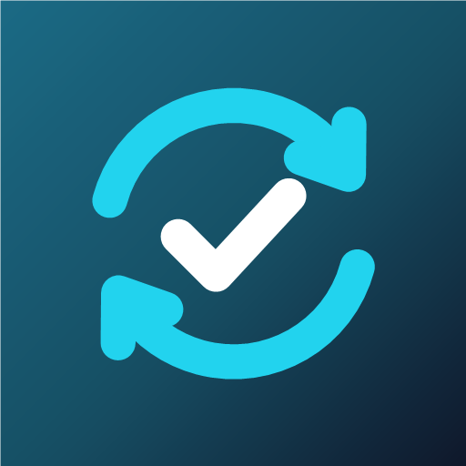

Syncro
Syncro es una app para Android que reúne tus tareas, tus eventos y tus notas en una sola línea de tiempo, y los mantiene sincronizados con tu propia cuenta de Google.
Qué hace
- Muestra tu día en una línea de tiempo con los eventos de Google Calendar y las tareas de Google Tasks.
- Crea, edita, completa y borra eventos y tareas desde la app, y los cambios llegan a tu Google Calendar y Google Tasks.
- Funciona sin conexión: los cambios se suben solos cuando vuelve internet.
- Te avisa por la mañana y por la noche con el resumen del día, y de tus eventos a la hora que elijas.
- Incluye notas, un asistente que te ayuda a organizar las tareas pendientes y un apartado de ahorros que solo se guarda en tu móvil.
Tus datos de Google
Syncro pide acceso a Google Calendar y Google Tasks solo para mostrar y sincronizar tus eventos y tareas. No tiene servidores propios, no muestra publicidad y no comparte tus datos con nadie. Los detalles están en la política de privacidad.